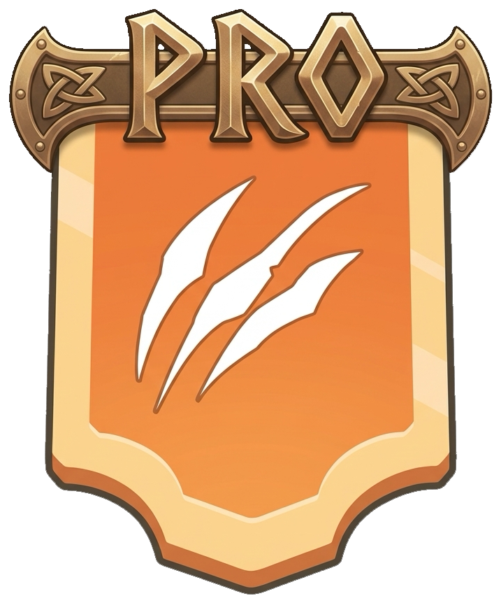

Garde tes 3 meilleurs héros
Laisse tes trois meilleurs héros dans ta ville. Dans le poste de commandement, bloque-les pour éviter de les déployer par erreur avec tes marches.

KINGSHOT / VIKINGSCOORDINATION D’ALLIANCE
La stratégie et les messages pour garder l’alliance synchronisée pendant les Vikings.
LA STRATÉGIE DES VILLES
Chacun envoie ses troupes renforcer les autres et reçoit des renforts pour défendre sa ville. Le but : protéger toute l’alliance et permettre à chacun de marquer des points.
Laisse tes trois meilleurs héros dans ta ville. Dans le poste de commandement, bloque-les pour éviter de les déployer par erreur avec tes marches.
Envoie tes troupes en renfort chez tes alliés et fais défendre ta ville par leurs renforts. Garder tes héros ne veut pas dire garder tes troupes.
Des troupes restées chez toi peuvent tuer des Vikings à la place des renforts : tes alliés perdent alors des occasions de marquer des points.
La liste Membres de l’événement permet de voir qui est en ligne, qui manque de renforts et qui tu renforces déjà.
C’est notre repère d’alliance pour tenir jusqu’au bout : 200 000 au total dans une ville, pas 200 000 par personne qui la renforce.
Ajuste selon la force des troupes, la difficulté et les rapports. Une ville déjà bien couverte peut laisser la priorité à une ville moins renforcée.
DANS LE JEU / PAGE DE L’ÉVÉNEMENT
Ouvre l’événement Vikings → appuie sur Membres.
Cette liste te donne une vue d’ensemble de l’alliance. Avant d’envoyer une marche, croise ces trois informations :
Regarde le statut de connexion de chaque membre. Repère les joueurs en ligne pour identifier ceux à aider en priorité lorsqu’ils manquent de renforts.
Compare le niveau de renforcement des villes. Notre repère est de 200 000 troupes de renfort au total par ville : cherche d’abord celles qui sont peu ou pas renforcées, puis ajuste selon leurs rapports.
Consulte les renforts que tu as déjà envoyés dans cette même liste. Repère leurs destinataires avant de choisir où envoyer une autre marche : l’objectif est de répartir l’aide entre les membres.
D’abord, un membre en ligne qui manque de renforts. Si les membres en ligne sont déjà bien couverts, aide les autres villes qui en ont besoin. Évite de concentrer toutes les marches sur une ville alors qu’une autre reste sans aide.
Par exemple, entre deux membres en ligne, l’un avec 80 000 renforts et l’autre avec 200 000, complète en priorité celui à 80 000, sauf consigne du R4 ou rapport montrant un besoin différent.
Reviens régulièrement dans Événement → Membres pour suivre la répartition. Pour déplacer des renforts déjà en place, vérifie les rapports et respecte les GO du R4.
POURQUOI VIDER SA VILLE ?
Tu marques des points pour les Vikings tués dans ta ville, y compris par les renforts. Tes troupes peuvent aussi marquer des points de renfort chez tes alliés.
Faire défendre ta ville par les autres ne te retire donc pas tes points de défense. Si tes propres troupes prennent les éliminations, elles réduisent les points de renfort disponibles pour ceux qui sont venus t’aider.
Ta ville est vide de tes troupes : les renforts éliminent les 1 000 Vikings. Tu obtiens les points de défense correspondants ; les alliés gagnent des points pour leurs éliminations.
Tes troupes en éliminent 300 : il ne reste que 700 Vikings à éliminer pour les renforts. Pour le même total de 1 000 Vikings tués, tes alliés ont moins d’occasions de marquer.
Exemple illustratif en nombre d’éliminations, pas un barème de points. La valeur en points dépend de la vague et de la difficulté.PENDANT L’ÉVÉNEMENT / SOIN ET FEU
Quand tu soignes des troupes, elles retournent immédiatement dans ta ville. Elles tuent alors des Vikings à la place des renforts de tes alliés, ce qui les prive de leurs points d’élimination. En plus, cela gaspille des accélérateurs : attends la fin de l’événement pour soigner sereinement.
Une ville en feu signale à l’alliance qu’elle a déjà subi un échec (après 2 défaites, elle n’est plus ciblée). Éteindre coûte des gemmes pour rien et désoriente les renforts. De plus, être en feu ne t’empêche pas de marquer tous tes points chez tes alliés et au QG !
Le bon réflexe : laisse brûler et ne touche pas à l’infirmerie. Soins et réparations se font après l’événement !
05 / CONTRÔLER APRÈS L’ATTAQUE
Regarde la ligne de ton joueur dans le détail des éliminations. L’objectif est 0 élimination par tes propres troupes dans ta ville. Si tu en vois, vérifie les troupes restées ou revenues chez toi et renvoie-les en renfort selon les consignes.
Vérifie le pourcentage en haut à droite du rapport. L’objectif est 100 % d’éliminations au total par les défenseurs. En dessous, signale la ville pour ajuster ses renforts avec le R4.
Le bon résultat : tes propres troupes font 0 élimination chez toi, les renforts en font 100 %.
Consignes et repère de 200 000 renforts : stratégie de notre alliance. Mécanisme des points : guide communautaire Kingshot Guides. Pour les vagues 10 et 20, suis les GO du R4 ci-dessous.